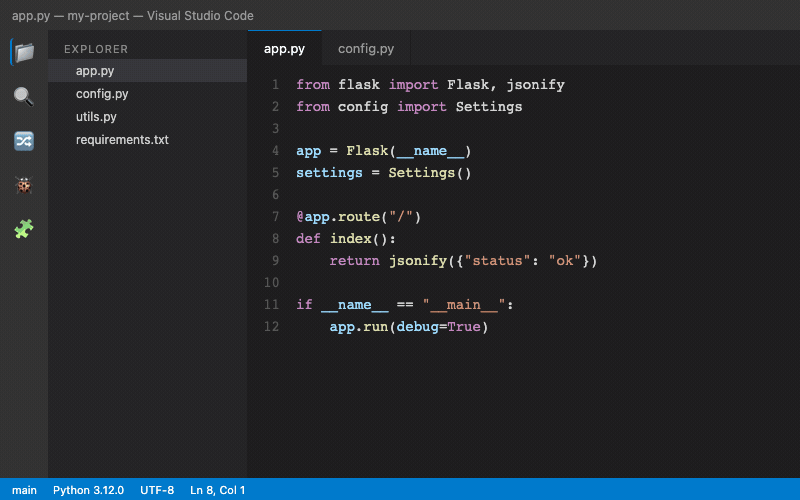
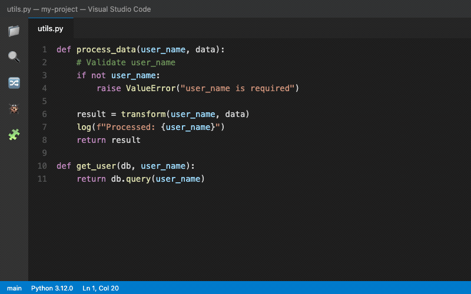
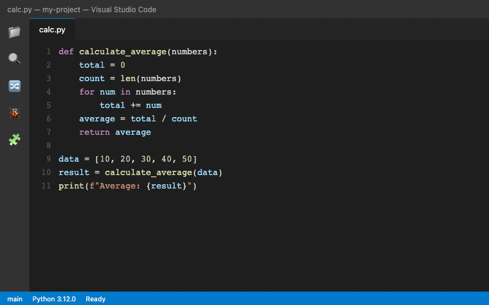

開発効率を上げるエディタ活用術
PWS Lab — April 2026
矢印キー or j/k で操作
なぜ選ばれるのか
画面構成・コマンドパレット
マルチカーソル・ショートカット
おすすめ・インストール方法
エディタ内で全て完結
サーバー開発・print卒業
自分だけの環境を作る
Workspace・Snippet・AI
Microsoft 開発の無料エディタ
GitHub上でオープンに開発
Electron ベースだが起動が速い
大規模プロジェクトにも対応
40,000+ の拡張機能
あらゆる言語に対応
Windows / macOS / Linux
どこでも同じ操作感
Stack Overflow Developer Survey 2024: 開発者の 73% が使用
| エディタ | 特徴 | 長所 | 短所 |
|---|---|---|---|
| VS Code | 多機能エディタ | 拡張性・Git統合・Remote開発 | メモリ使用量やや多い |
| Vim / Neovim | ターミナルエディタ | 超高速・SSH先で使える | 学習コストが高い |
| PyCharm | Python特化 IDE | リファクタ・デバッグが強力 | 重い・有料版あり |
| Jupyter Notebook | 対話型実行環境 | データ分析・可視化向き | 大規模開発に不向き |
| Sublime Text | 軽量テキストエディタ | 起動が爆速 | 拡張エコシステムが小さい |
# Homebrew で一発 brew install --cask visual-studio-code # または公式サイトからダウンロード # code.visualstudio.com
インストール後、Cmd+Shift+P → Shell Command: Install 'code' でターミナルから code . で起動可能に
# Snap で一発 sudo snap install code --classic # または apt sudo apt install code
研究室サーバー (Docker) では
code-server (ブラウザ版) も利用可能
# winget で一発 winget install Microsoft.VisualStudioCode # または公式インストーラー # code.visualstudio.com
インストール時に「PATHに追加」にチェックを忘れずに
まずはこれだけ覚えよう

Show All Commands
> | コマンド実行 |
@ | ファイル内シンボル |
# | ワークスペース全体のシンボル |
: | 行番号にジャンプ |
| なし | ファイル名検索 (Cmd+P) |
Cmd+P は部分一致で検索可能。apco と入力するだけで app/config.py にマッチ
code ファイル名 で直接ファイルを開ける
VS Code の真骨頂
Windows/Linux: Cmd → Ctrl に置き換え

| Alt + Click | カーソルを追加 |
| Cmd + Alt + ↑/↓ | 上/下にカーソル追加 |
| Cmd + D | 同じ単語を追加選択 |
| Cmd + Shift + L | 全ての同一単語を選択 |
.*) を有効にするとフィルタ機能
*.py — Python ファイルだけ検索
!node_modules — 特定フォルダを除外
src/**/*.ts — サブディレクトリも含む
Alt + ↑/↓ で行をドラッグせずに上下移動。
複数行選択してからでも使える。
Shift + Alt + ↓ で行をコピー。
繰り返しパターンの作成に便利。
Shift + Alt + ドラッグ で矩形に選択。
CSV やテーブルデータの編集に最適。
Tab / Shift+Tab でインデント調整。
複数行選択して一括インデント。
F12 または Cmd + Click。
関数やクラスの定義に一瞬で移動。
Alt + F12 でインラインプレビュー。
ファイルを開かずに定義を確認。
VS Code を自分好みにカスタマイズ
Microsoft
IntelliSense, Linting, デバッグ, Jupyter。必須中の必須。
Microsoft
高速な型チェック、自動補完、インポート整理。Python拡張と連携。
Astral
超高速 Python Linter & Formatter。flake8 + isort + black を1つで。
Microsoft
VS Code 内で .ipynb を直接編集・実行。セル単位の実行も可能。
Microsoft
Python のデバッグ機能を提供。ブレークポイント、ステップ実行。
Nils Werner
関数の下で """ を入力すると docstring を自動生成。
行ごとの blame 表示、コミット履歴の可視化。Git の真価を発揮。
リモートサーバーに接続して開発。研究室サーバーとの連携に必須。
UI を日本語化。メニューや設定が日本語で表示される。
エラー/警告をコード行の横にインライン表示。問題を見逃さない。
インデントを色分け表示。Python のようなインデント重要言語に最適。
ファイルパスの自動補完。import 文やファイル参照の入力が楽に。
サイドバーから
Extensions アイコン or Cmd + Shift + X
検索して Install
拡張機能名を入力 → Install ボタン
コマンドラインから
code --install-extension ms-python.python code --install-extension ms-python.pylance
.vscode/extensions.json{
"recommendations": [
"ms-python.python",
"charliermarsh.ruff"
]
}
エディタから離れずに全て完結
| Ctrl + ` | ターミナル表示切替 |
| Cmd + Shift + ` | 新しいターミナルを作成 |
| Cmd + \\ | ターミナルを分割 |
| Cmd + ↑/↓ | 出力のスクロール |
// settings.json { "terminal.integrated.defaultProfile.osx": "zsh", "terminal.integrated.fontSize": 14, "terminal.integrated.scrollback": 10000 }
| 操作 | 方法 |
|---|---|
| Stage | ファイル横の + ボタン |
| Commit | メッセージ入力 → Cmd+Enter |
| Push | ... メニュー → Push |
| Pull | ... メニュー → Pull |
| Branch | ステータスバー左下のブランチ名をクリック |
| Merge Conflict | Accept Current / Incoming ボタン |
GitLens を追加すると: 行ごとの blame、コミット検索、ファイルヒストリーの比較が可能に
ステータスバーのブランチ名をクリック → 「Create new branch」
feature/add-login
変更するとサイドバーに数字バッジが表示される
Source Control → + → メッセージ入力 → Cmd+Enter
ステータスバーの ↑ アイコンか ... メニューから Push
Fix login timeout by increasing session duration to 30min
サーバー開発 & print文からの卒業
# ~/.ssh/config Host pws-160core HostName 100.104.225.55 User pws-ubuntu-server IdentityFile ~/.ssh/id_ed25519 Host pws-gpu HostName 100.126.144.110 User root IdentityFile ~/.ssh/id_ed25519

| 行番号の左をクリック | ブレークポイント設定 |
| F5 | デバッグ開始 |
| F10 | ステップオーバー |
| F11 | ステップイン |
| Shift+F11 | ステップアウト |
| F9 | ブレークポイント切替 |
print() でOK。ループのバグや複雑なロジックの追跡にはデバッガが圧倒的に効率的。
// .vscode/launch.json { "version": "0.2.0", "configurations": [ { "name": "Python: Current File", "type": "debugpy", "request": "launch", "program": "${file}", "console": "integratedTerminal", "justMyCode": true }, { "name": "Python: Flask", "type": "debugpy", "request": "launch", "module": "flask", "env": { "FLASK_APP": "app.py" }, "args": ["run", "--debug"] } ] }
ブレークポイントを右クリック →「Edit Condition」
# 例: i が 100 の時だけ止まる i == 100 # 例: name が特定の値の時 name == "admin"
ブレークポイントの代わりにログメッセージを出力。コードを変更せずに print デバッグ風の出力が可能。
# Log message 例:
value of x: {x}, total: {total}
自分だけの開発環境を作る
// settings.json // Cmd+Shift+P → "Open User Settings (JSON)" { // 自動保存（フォーカスが外れたら保存） "files.autoSave": "onFocusChange", // 保存時にフォーマット "editor.formatOnSave": true, // フォントサイズ "editor.fontSize": 14, // ミニマップ非表示（画面を広く） "editor.minimap.enabled": false, // 括弧のペアを色分け "editor.bracketPairColorization.enabled": true, // 末尾の空白を自動削除 "files.trimTrailingWhitespace": true, // 最終行に改行を自動追加 "files.insertFinalNewline": true, // Python のデフォルトインタープリタ "python.defaultInterpreterPath": "python3" }
.vscode/settings.jsonWorkspace 設定が User 設定より優先される
Cmd + K → Cmd + T でテーマ一覧
Fira Code — リガチャ対応!= → ≠, => → ⇒ のように表示
さらに効率を上げる
my-project/
.vscode/
settings.json # プロジェクト設定
launch.json # デバッグ設定
tasks.json # タスク定義
extensions.json # 推奨拡張機能
src/
tests/
README.md
Git にコミットしてチームで開発環境を統一
複数のプロジェクトフォルダを1つのウィンドウで開ける。
// my-work.code-workspace { "folders": [ { "path": "./backend" }, { "path": "./frontend" }, { "path": "./docs" } ], "settings": { "editor.fontSize": 14 } }
よく使うコードパターンを登録して、数文字のプレフィックスで展開。
// Cmd+Shift+P → "Snippets: Configure Snippets" // → python.json { "Main Guard": { "prefix": "ifmain", "body": [ "if __name__ == \"__main__\":", " ${1:main()}" ], "description": "if __name__ == __main__" }, "Docstring": { "prefix": "doc", "body": [ "\"\"\"${1:Summary}", "", "Args:", " ${2:param}: ${3:description}", "", "Returns:", " ${4:description}", "\"\"\" " ] } }
${1:placeholder} | Tab ストップ |
$0 | 最終カーソル位置 |
${TM_FILENAME} | ファイル名 |
${CURRENT_YEAR} | 現在の年 |
${1|one,two|} | 選択肢 |
HTML ファイルで Emmet 記法が標準搭載:
入力: div.container>ul>li*3 展開 (Tab): <div class="container"> <ul> <li></li> <li></li> <li></li> </ul> </div>
// .vscode/tasks.json { "version": "2.0.0", "tasks": [ { "label": "Run Tests", "type": "shell", "command": "pytest -v", "group": { "kind": "test", "isDefault": true }, "problemMatcher": ["$pytest"] }, { "label": "Lint", "type": "shell", "command": "ruff check .", "problemMatcher": [] }, { "label": "Format", "type": "shell", "command": "ruff format ." } ] }
| Cmd + Shift + B | ビルドタスク |
| Cmd + Shift + P | → "Run Task" |
タスクの出力からエラーを解析し、Problems パネル に表示。エラー箇所に直接ジャンプ可能。
複数のタスクを組み合わせて実行:
{
"label": "Lint & Test",
"dependsOn": ["Lint", "Run Tests"],
"dependsOrder": "sequence"
}
education.github.com で申請すると Copilot Pro が無料
Cmd+K Z でフルスクリーン集中モード。UI が全て消えてコードだけに。Esc×2 で戻る。
スクロール時にスコープ（関数名・クラス名）がエディタ上部に固定表示。今どこにいるか一目瞭然。
Explorer の下部にファイルの変更履歴を時系列で表示。Git コミットやローカルの保存履歴を確認。
エディタ上部にファイルパスとシンボルを表示。クリックで素早くナビゲーション。
サイドバーにファイル内の関数・クラス一覧を表示。大きなファイルの構造把握に便利。
Cmd + . で自動修正提案。インポート追加、変数リネーム、コード修正など。
Cmd + K Cmd + S でキーバインド設定画面を開く
// keybindings.json [ { "key": "cmd+shift+t", "command": "workbench.action.terminal.new" }, { "key": "cmd+shift+r", "command": "workbench.action.tasks.runTask", "args": "Run Tests" } ]
他のエディタから移行する場合:
まずは コマンドパレット と ショートカット5つ を覚えるところから始めよう
毎日1つずつ新しい機能を試していけば、1ヶ月で劇的に変わる
code.visualstudio.com/docs
最も網羅的で正確な情報源
Visual Studio Code チャンネル
Tips & Tricks シリーズが特におすすめ
Cmd+K Cmd+S でキーバインド一覧
PDF版もダウンロード可能
Stack Overflow [vscode] タグ
GitHub Issues で機能リクエスト
困ったら Cmd+Shift+P → キーワード検索。大抵の機能はここから辿り着ける。
"The best editor is the one you know well." — 使い慣れたエディタが最強
質問・相談はいつでもどうぞ